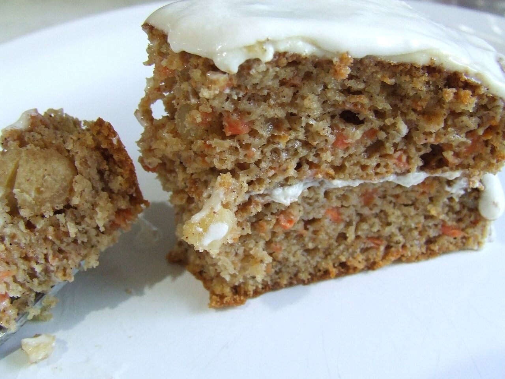
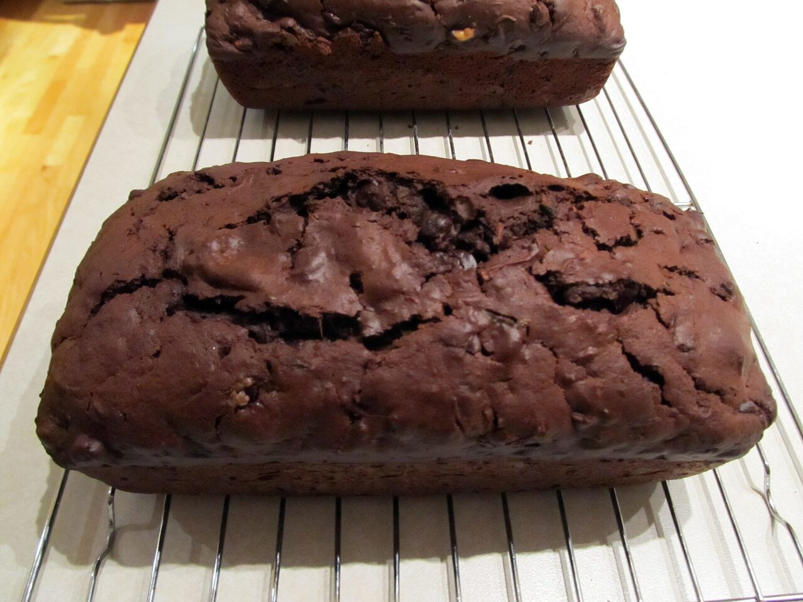
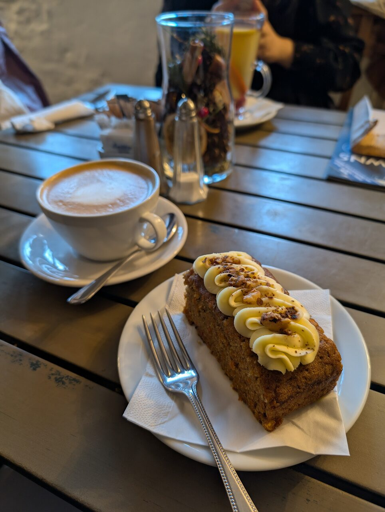

Healthy, yummy baked goods that don't make you feel sick after eating them. Gluten-free, dairy-free, nut and fructose friendly - sweet meets healthy, with vegetables and fruit baked right in.



The perfect snack option - only NIS 3 each. They freeze well and defrost quickly, so stock up.
A generous 5x27cm cake - great for large meals or as a gift that actually gets eaten.
Carrot & ginger, zucchini & raisin, sweet potato & carob (sugar free), choc beet, banana coconut choc-chip.
All cakes are made from kosher gluten-free and dairy-free ingredients in a clean kosher kitchen (no hechsher).
Please allow at least 2 days between order and pickup.